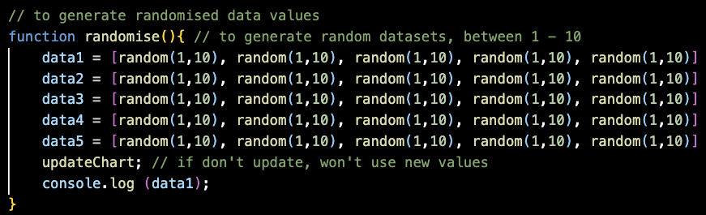

✒ Week 11
♦ 1. STYLING
Last week, I was feedbacked that the layout is okay. This week, I decided to work more on getting it to be more responsive so that it was still accessible, particularly for smaller screens. I thought this was important so that I have some level of certainty that whatever appears on someone else's screen is still a usable version of the app.
♦ 1a. Bootstrap grid system classes
Before this week, my understanding of Bootstrap was mostly informed by various forum threads on obscure art sites, and I have never actually read through and understood the documentation properly. The biggest issue I was facing was that my columns weren't stacking properly when I made the window smaller. It was even worse on mobile.
Luckily, I found this StackOverflow thread that advised the OP to read the grid system documentation carefully.
After doing so, I realised I was working with the wrong classes the entire time. I was using col-sm-x, where x is a number between 1 - 12 since a row is made of 12 units in Bootstrap. However, the -sm- part of col-sm-x meant that I was setting the column layout for small devices (576px < size < 768px). So, for example, two columns with the classes col-sm-4 and col-sm-8 would remain side by side even on small windows and would not stack.
I then decided two things for the layout.
1. side-by-side layout should only apply for bigger screens (i.e. at least 768 pixels)
The solution to this is to use col-md-x, because this sets the layout for screens at least 768px (assuming there isn't another col class that overrides it, like col-lg-x)
2. therefore, columns should stack on smaller screens.
The solution to this is to use col-12. col-x applies to all screen sizes unless it is overridden by a more specific class, such as col-md-x. Hence, col-12 indicates to the browser that the section should take up the whole row on smaller screens, i.e. stack.
The following image was also something I made to help my understanding. I made an error in the drawing though, 720px is supposed to be 768px haha.
♦ 1b. using js for responsiveness
One issue I was facing was the big gap below the swatches column when all the columns stacked on each other for smaller screens.
I wanted to get the swatches column (#swatchBox) to be the same height as that of the options column (#ctrlPanel). I didn't know how to do this in CSS, but then I suddenly wondered if I could manipulate the CSS values with JS! The steps I needed were:
1. Get #swatchbox element
2. Get #ctrlPanel element
3. Test if the viewport width is < x (x refers to the minimum value for the columns to stay “unstacked”. For now, this is 768px which aligns with the col col-md-x classes, but I might increase it in the future)
4. If the viewport width < x, then…
5. Get height of ctrlPanel
6. Set swatchBox height to ctrlPanel height
Most of the function, windowRespond(), consisted of things I was familiar with e.g. document.getElements and setting a CSS property. However, the 2 things I didn’t know how to do were:
1. Getting the width of the viewport
I found out that the innerWidth property for the window could help with this. (source)
2. Getting the height of an element
Initially, I thought I would just have to access the .style.height. It did not work when I tried this, however. I did more research and found out that we can use .offsetHeight to get the total height of margin + border + padding + content. (source)
After this, I called windowRespond() once to activate it on load and added an eventListener for resizing activity.
Even though it worked if you resized the window to < 768px, resizing back to a width that is > 768px also applied the same code and the swatchBox would become a scroll box. This is not something I wanted – at screens >768px, i.e. when the columns are not stacked, I wanted the swatchBox to take up only 100vh so that users don’t have to scroll to see the colours.
I decided I had to add else if() to reset it back to the original code (see image below). This worked!
♦ 2. ALGORITHM TWEAKING
After obsessively clicking my Generate button many times, I began to feel like the generated palettes didn't have a good contrast most of the time. So I decided to add more flexibility to the algorithm.
♦ 2a. adding a third hue
I decided to add a third hue (hue3) because only having 2 made it hard to have good contrast. I did this by changing the class of the last swatch from hue2 and hue3, then adding the relevant extra arrays and edits to the existing functions.
The only errors I faced in this process were "minor" typos. It's in quotes because even though I didn't have to do much rearranging, it's still a very frustrating error.
♦ 2b. changing ranges
I noticed that I kept generating the same types of combinations with barely any yellow or orange. I suspected that my condition in redGreen() was probably too strict. So I hunted for another hsl wheel to check the ranges and found this more specific one.
{kind=link}
I won't go into too much detail here, but I basically made the range defining red & green smaller based on the referenced wheel. This gave the algorithm more freedom.
I also played around with using random() to generate random values where they were previously fixed. For example, the space between the lightness values for 2 colours was previously fixed at 20. This time, I changed it to 10 + random(10, 70);.
Actually, I kept forgetting that random() only generates a range of numbers that always starts from 0. So random(0, 100) and random(100, 200) both result in numbers from 0 to 100 and not 100 - 200 for the second one. In order to get numbers within a certain range, the constant has to be added e.g. 100 + random(0, 100).
I also tweaked the range for satValGen to 10 + random(0, 50) for richer colours. Previously, saturation started from 0 which could generate very greyish colours.
♦ 3. CHART PREVIEWS
♦ 3a. adding more charts
My preview section felt very bare, so I decided to add 3 more charts. I chose doughnut, polar area and bubble charts because the other charts would not make sense to place in this project. Radar and area fill charts, for example, would be very confusing to have more than 2 or 3 colours and therefore are not the target of this project anyway.
♦ 3b. styling size
Some of the chart proportions differed from each other. For example, the pie chart was in a square while the linegraph was in a rectangle. I didn't like the inconsistency, so I looked up how to make the chart square and also how to hide the axes. The code I used was all from the chartjs documentation.
♦ 4. SIDEBAR OPTIONS
Some of these were carried over from previous weeks that I finalised this week. These involve the buttons in the rightmost column of the app.
♦ 4a. copy-paste button (copyBtn)
For the copy-paste button, I used clipboard.js and adapted the code I had written for the extra practice to do this.
It also requires the element containing the target text in the HTML to have a unique ID. The button that calls the clipboard function should have an attribute called data-clipboard-target = targetID.
I'm still having trouble understanding the code enough to tailor a custom user feedback e.g. changing the innerHTML to something like "copied" or a tick icon on successful copying. It's not about how to change, but more of how does JS "understand" when something is successfully copied?
I probably have to just trial and error a little more to figure it out.
♦ 4b. locking colours
The goal of this function was to be able to "lock" certain colours so that they would not change when Generate is clicked. The steps that I would need are:
1. Store the state of the lock somewhere
2. Test the state of the lock when lock() is called
3. lock() has to lock or unlock depending on the current state (alternation)
Initially, I tried using a counter to detect the state. Every click would add 1 to the counter, and the state would be locked or unlocked depending on whether the counter was odd or even. However, I noticed that in some situations, I had to double-click on the locks to get it to change state.
Furthermore, there are multiple lock buttons. Each one of them would need their own unique counter to track their states. I felt this was very messy, so I decided to use a single variable to store the lockStates for all the lock buttons.
As seen in the image, the variable lockState is an array of values. Each index corresponds to the state of a lock button – lock1 state is in lockState[0], lock2 in lockState[1] etc. Then, I used if... else if statements in lock() to check and change the states.
With this, I was able to change the lockState of each lock when it was clicked. I could then use the lockState as an if condition in the for loop for changeColour()
This feature broke later on when I stored the rgb values in an array rgbVal, because everytime I clicked the button, the array was cleared. Then, the locked colour didn’t have any value in it. So, instead of pushing the rgb strings one by one into rgbVal, I would do this:
1. For x in Swatches
2. if colour x is not locked (i.e. lockState[x] == false)
3. replace rgbVal[x] with a new rgbString
What this meant was just changing rgbVal.push to rgbVal[x] = rgb. It became an array of arrays containing r, g, b values. This way, I could skip regenerating colours for rgbVal[x] if lock[x] was locked.
♦ 4c. updateCharts()
Back in Week 9 when I started coding the project, the biggest problem was getting the charts to change colour. I realised that the colours did not change because the charts are declared before changeColour() is called. I also can't call changeColour() before I declare the charts, because changeColour() has to access the properties of the charts to change them.
So, there had to be a way to "regenerate" the charts to incorporate the newly generated colours when changeColour() is called.
As we also learned this week, the code to do this with Chartjs is to use chart.update(). I have the different chart.update() lines for my various charts tucked into a function in the code called updateCharts(), which I call at the end of changeColour().
♦ 4d. randomise() & reset()
I noticed that Viz Palette had a randomise data button that randomised some of the charts so that people could get a better idea of what different types of data would look like. Since I was not able to let people edit the data for themselves, I thought this would be a good idea to implement as well.
I kept the initial datasets with standard numbers, but created randomise() which would generate random values between 1 to 10 for each array.

Then I added an event listener to randBtn which would call randomise() when randBtn was clicked. Unfortunately, while this did generate new arrays for the datasets, the charts did not change even if I used chart.update().
I did more reading and while I could not find a thread with my specific problem, I did notice that in threads where the OP wanted to change the data shown in the chart, they would have to go inside the chart to get the data to change. I inferred that this meant I have to replace the data in the chart when randomise() is called in order for the data to change, and cannot just change it externally through the array. So, here is the new version of randomise():
I wrote the for loop for the linechart and bubble chart without packing them into other functions because they were pretty unique in how I would have to access the data property. As for the bar, pie, polar area and doughnut charts, they were similar in that all the data was in chartName.data.datasets[0].data, so I could write a function oneDataset(chartName) for them with chartName as a parameter.
However, I realised that sometimes random() generated values of 0 because it used Math.floor. I needed Math.floor in random() because those 0 values were wanted in other functions I had used it in. So, I made randomup() which used Math.ceil instead of Math.floor to round up to the nearest integer rather than round down. This stopped the 0 values.
Also, the randomisation wasn’t working for the bubble chart. I noticed two errors with my initial code:
1. I did not specify which dataset the code should look at. I fixed this by using dataset[0] instead of just dataset
2. I did not specifically target the x, y and r properties. I fixed this by adding individual lines of code doing so
And randomise() worked! Now to reset the values XD
I wanted to use a resetBtn to call reset() that would change the charts back to the initial, fixed datasets. I started to face a problem with the linechart code:

What I wanted this for loop to do was to replace each data with data1, data2, data3, data4, data5 – which are variables with arrays of data in them. However, what it was doing was replacing each data with data[0], data[1], data[2] etc. i.e. single numbers inside the data array. So, I created a new array called allData = [data1, data2, data3, data4, data5];
allData stored the 5 arrays while still preserving them as individual arrays (as opposed to if I had used .concat()). Then, I rewrote the for loop like this instead:
lnPrvw.data.datasets[x].data = allData[x];
And it worked!
♦ 4e. export options
Writing the export features feel like they might be pretty complicated because I'm not sure (yet) what I can use to get screenshots. So I just wrote down a brief outline of the steps I would need:
1. Have a checkbox for each canvas
2. When click select all, all the checkboxes would be activated
3. When individual checkboxes are ticked, "grab" corresponding divs (somehow)
4. When download button is pressed, run a function that will download the selected divs
After creating the input type="checkbox"in the HTML, I moved on to step 2. The function for step 2 is selectAll(). The goal of selectAll() was to tick all the checkboxes when the box for select all was checked.
To do this, I needed a way to test if the checkbox was checked, and I learned about the checked property through W3Schools. Then, I placed all the checkbox variables into an array checkOptions so that I could loop through them to check their statuses.
Initially, I thought the status of the options should be opposite from the status of allDl.checked because that’s the logic used when we’re alternating clicks. The image below shows my initial attempt.
But after trying it out, I realised that the statuses have to match. I think it’s because the check for allDl is happening first, and then the checking of the other checkboxes occur after that. So I tweaked selectAll() to reflect that.
♦ Changing For Loop
I also found out that for...in is not recommended to iterate over arrays (source) so I decided to replace them with the normal for loops e.g. for (let x = 0; x < Array.length ; x++)Since I was already using x for a lot of parameters, I just stuck with x instead of the usual i. After replacement, all of the loops except for (x in Swatches) inside changeColour() worked. I'm not really sure why, but I just stuck with it since it worked.
♦ NEXT WEEK
COMPULSORY
• SVG icons & raphael
• find a way to dynamically calculate and set the widths of the option buttons in the swatches
• actually get the download function to work
• maybe add more data to the bubble chart/take it out. it doesn't really feel like a bubble chart
• find a way to move "about" section either to the footer when the columns stack on smaller screens OR move it to a different page altogether
FUN STUFF
• option to edit the colours
• option to display the text as hsl or rgb maybe?
• a simple help popup that people can click on to explain all the different options
• add a textarea with all the codes/copyAll button (i've been talking about this forever but never get around to it)
• fancy loading screen?? idk??
so much we can try wheeeeeeeee